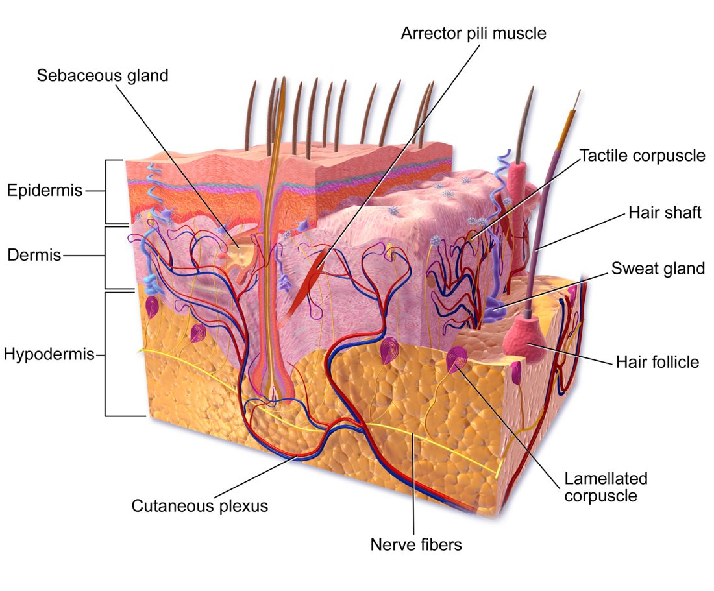
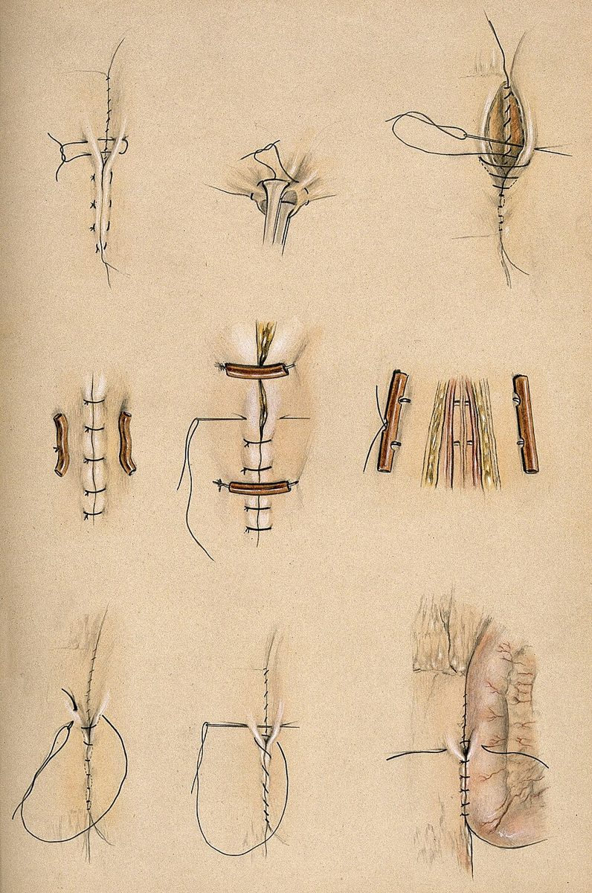
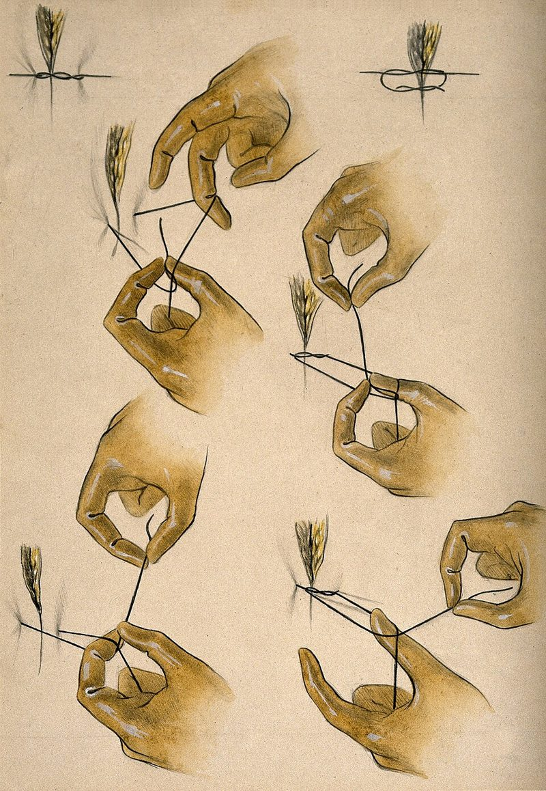

סדנת תפירה
איך פצע נסגר, באיזו שכבה תופרים, איזה חוט ואיזה תפר. ואיך מקבלים צלקת טובה
בסוף הסדנה תדעו
- להחליט אם לסגור פצע מיד, באיחור או להשאיר אותו פתוח
- לזהות את שכבות העור ולדעת באיזו שכבה כל תפר אוחז
- לבחור חוט ותפר מתאימים: בודד, רציף, מזרן אנכי ותוך-עורי
- לתפור תפר בודד ולקשור קשר במכשיר, בטכניקה בטוחה
- לצמצם מתח וצלקת ולטפל בפצע אחרי הסגירה
לסגור עכשיו, אחר כך, או לא בכלל?
באיזו שכבה התפר אוחז?

👆 לחצו על שכבה כדי לראות איזה תפר עובר בה
השכבה החיצונית, המחסום נגד איבוד נוזלים וחיידקים. התאים שלה מתחילים לנדוד ולכסות את החתך כבר בשעות הראשונות. המטרה: שולי העור נוגעים זה בזה, מעט כלפי חוץ, בלי לחנוק. שם הקשר יושב על העור
השכבה שמחזיקה את התפר: כאן הקולגן. התפר התוך-עורי עובר כולו בדרמיס בחוט נספג. התוצאה אסתטית, בלי צורך להוציא תפרים. תפר מזרן אנכי אוחז בשני עומקים ומפזר מתח. לכן הוא מתאים לפצע במתח
שומן עם מעט כלי דם. לכן הוא פגיע לזיהום. מתחתיה הפאציה, השכבה החזקה שסוגרים בבטן. הפאציה מגיעה לכחצי מהחוזק המקורי בין היום ה-8 לחודש השני. לכן סוגרים אותה בחוט שנספג לאט
איזה חוט?
איזה תפר מתי?

תפר בודד וקשר במכשיר
- אוחזים את המחט במחזיק בשליש האחורי שלה, בניצב למחזיק
- נכנסים לעור בזווית ישרה, כ-5 מ״מ מהשוליים. מסובבים את פרק היד לפי קשת המחט
- יוצאים בצד השני באותו מרחק ובאותו עומק. מחזיקים את העור בעדינות בפינצטה, לא מועכים
- קשר במכשיר: לולאה כפולה ראשונה. אחריה לולאות בודדות בכיוונים מתחלפים
- מקרבים ולא חונקים: הרקמה מתנפחת אחרי הניתוח. הקשר בצד אחד של החתך
- חותכים את הקצוות ומשאירים כמה מילימטרים

צלקת טובה מתחילה בתכנון
- מתח מפעיל את הפיברובלסטים ומוביל לעודף קולגן. פצע בניצב לקווי Langer נמצא במתח גדול יותר
- חתך בניצב לסיבי השריר מתחתיו נוטה להיות שטוח וצר. חתך מקביל להם נפתח כשהשריר מתכווץ
- אזורים בסיכון לצלקת רעה: הכתף (הדלתואיד) והסטרנום
- אחרי הסגירה: הדבקת סטריפים על הצלקת 3 חודשים, לחות וסיליקון, הגנה מהשמש (מקדם 50 ומעלה) שנה
חבישה ומעקב
- פצע מחלים הכי טוב לח, נקי וחם. מתחת לחבישה סוגרת שמשמרת לחות, האפיתל מכסה פי 2 מהר יותר מפצע שמתייבש
- לחתך ניתוחי נקי: חבישה רגילה, משחה או חבישה שקופה סוגרת
- חבישת ואקום מעל חתך סגור: הספר ממליץ לשקול. מחקר חדש בניתוחי חירום לא מצא תועלת (ראו "מה חדש")
- זיהום בחתך מופיע בממוצע כ-10 ימים אחרי לפרוטומיה. יותר מ-60% מתגלים אחרי השחרור. לכן מסבירים למטופל על מה לשים לב
מה לא לעשות
- קשר חזק מדי: הרקמה נחנקת ומתנפחת
- ביסים לא שווים: מדרגה בעור
- שוליים שפונים פנימה
- תפרים צפופים מדי או רחוקים מדי
- סגירה במתח במקום לשחרר או לבחור תפר מתאים
- תפירת פצע מזוהם מאוד
- לא נוגעים במחט באצבעות. מעבירים אותה במחזיק
- מחט על השולחן תמיד בתוך המחזיק או במקום ייעודי
- מודיעים כשמעבירים חד: "חד"
- מחטים וסכינים לפח חדים
- דקירה: מדווחים מיד לפי נוהל בית החולים
- בחדר ניתוח: כל המחטים נספרות לפני הסגירה
מחקרים שכדאי להכיר
41 מחקרים אקראיים ו-9 מחקרי עוקבה. ביסים קטנים בחוט שנספג לאט הורידו בקע בחתך (יחס סיכויים 0.44) וזיהום (0.70) לעומת ביסים גדולים. אין הבדל בין תפר רציף לבודד
van den Berg R et al. Ann Surg Open 2025;6:e548802 מטופלים אחרי ניתוח לסרטן המעי הגס. בקע בחתך אחרי שנה: 14.8% לעומת 17.1%, בלי הבדל מובהק. יותר זיהום פצע בשיטה החדשה (13.2% לעומת 7.7%)
HART Collaborative. Br J Surg 2022;109:943-50840 מטופלים בבריטניה ובאוסטרליה. זיהום פצע: 28.4% עם ואקום ו-27.4% עם חבישה רגילה. בלי תועלת
Atherton K et al. JAMA 2025;333:853-63חמישה דברים לקחת למחלקה
- פצע נקי סוגרים. פצע מלוכלך מאוד משאירים פתוח
- הדרמיס מחזיק את התפר. מקרבים ולא חונקים
- בודד כשחושבים שאולי נצטרך לפתוח. מזרן אנכי למתח. תוך-עורי ליופי
- הבטן: ביסים קטנים וחוט שנספג לאט
- פחות מתח, הגנה מהשמש ומעקב: צלקת טובה יותר וזיהום שמתגלה בזמן